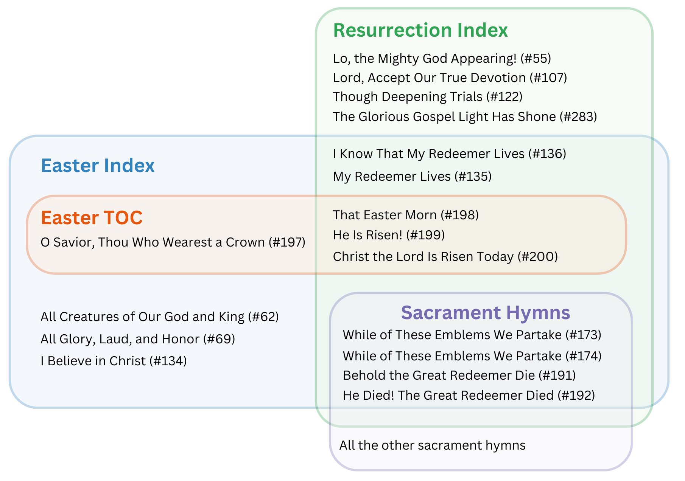
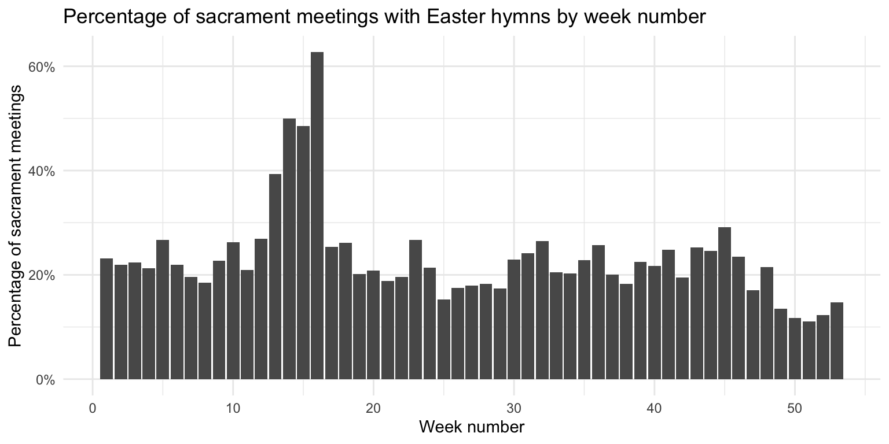
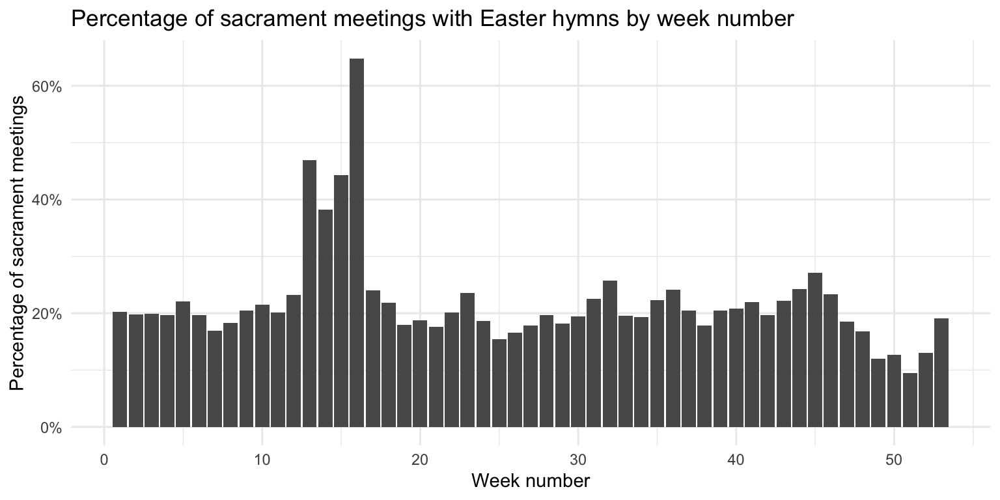
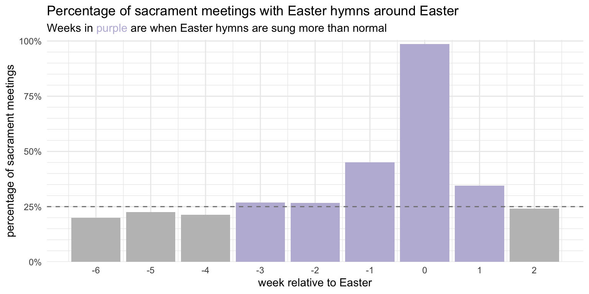
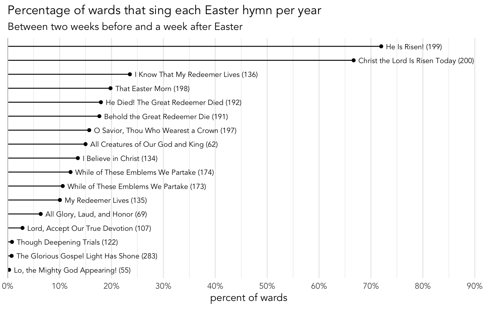
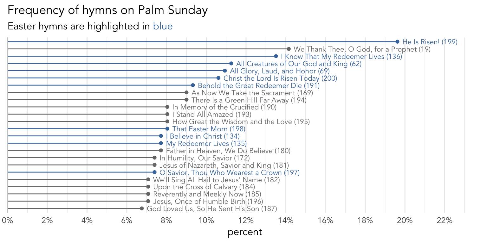
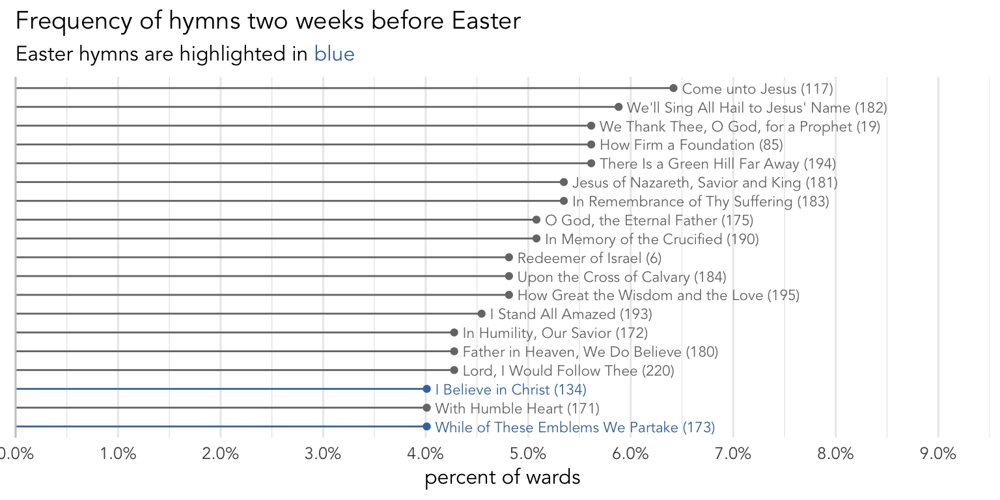
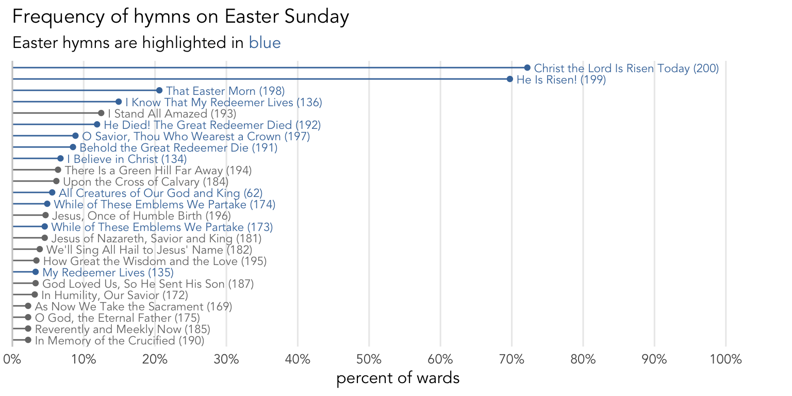
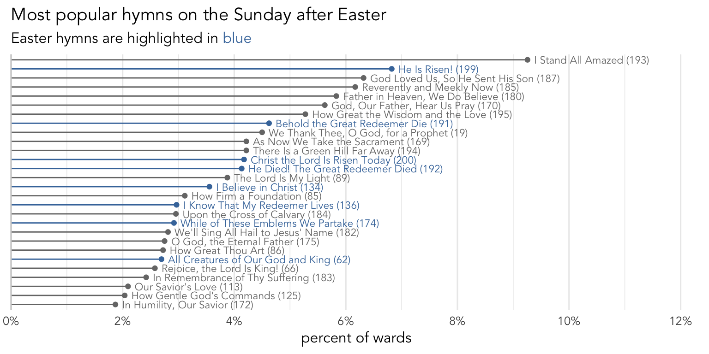
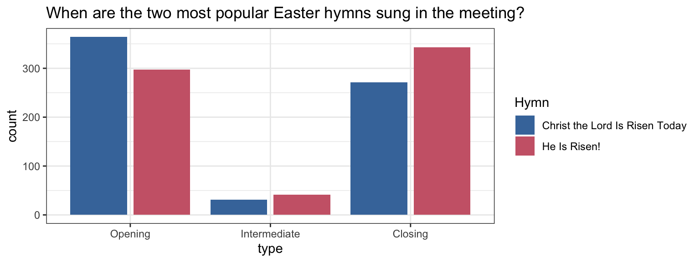

What hymns are sung around Easter?
holidays
frequency
Compared to other Christian religions, we don’t have a lot of celebration around Easter, whether in the home or in church meetings. My impression is that some members of the church are incorporating more celebratory activities for things like Palm Sunday and Good Friday, but this change is happening slowly and idiosyncratically. On Easter Sunday, the hymns we sing are usually focused on the resurrection of the Savior. In this post, I explore Easter hymns and other hymns sung around Eastertime.
What are the Easter hymns?
From what I can tell, we have four places to look for finding Easter hymns: The Easter section in the Table of Contents (TOC), the Easter entry in the index, the resurrection entry in the index, and sacrament hymns. This figure below shows which hymns fall into which category and how they intersect.

So, this figure shows that according to the Table of Contents, we have four Easter Hymns:
So, for the remainder of this post, I’ll focus on that set of hymns.
When are Easter hymns sung?
While figuring out the exact date of when Easter will be can be calculated, it is a lot easier to just get a list of when Easter was from 2022 to 2024 and look at sacrament meetings relative to those dates. So I just took that list of dates and looked at hymns relative to them. This means, unlike my post on Fast Sundays, which were pretty approximate, here I’ve got a pretty accurate look at Easter.
If we focus on the period from about six weeks before Easter to two weeks after, we can see how many wards since any of the hymns shown in Figure 1 each week. Figure 2 shows these numbers. As you can see, there is obviously a spike on Easter itself and a whopping 98.4% of wards sing at least one Easter hymn on Easter Sunday. But, there seems to be a fair number of Easter hymns sung even six weeks before.
But, hold on a second. Before we pat ourselves on the back for singing Easter hymns as much as six weeks before the holiday, let’s take a closer look at the data. These “Easter” hymns include a fair number of regular hymns that would be perfectly appropriate in other weeks of the year. Obviously the four sacrament hymns are sung outside of the Easter season (like
So, to get a gauge for how often these supposed Easter hymns are sung, I looked at how many of these were sung during weeks that aren’t influenced by major holidays. (See details below if you’d like.)
Technical details
First, here is a plot showing the proportion of sacrament meetings in my dataset that have at least one “Easter” hymn across the year.

There is an obvious peak around Easter, but Easter varies across years, so it’s a little spread out. There’s also a noticeable dip towards the end of the year as we sing more Christmas hymns. But, the rest of the year is pretty consistent, with maybe a slight dip in the summer.
Again, to get an idea of the number of “Easter” hymns, I decided to look at the following:
- The second through fifth weeks of the year, which is January 8 through February 4. This avoids residual New Year’s Day hymns and is before when Valentine’s Day hymns might be sung.
- The 22nd and 23rd weeks of the year, which is May 22 through June 10th, which is after Mother’s Day and before Father’s Day.
- The 32nd through 38th weeks of the year, which corresponds to August 5 through September 23. There are no major holidays during that period. It’s after Pioneer Day (in Utah) and before when General Conference hymns pick up.
I acknowledge that this is very US-centric, but since around 85% of my data comes from the US, I guess I’m considering the influence of other countries to be somewhat negligible for this basic calculation.
With that in mind, here’s the same plot as above, but with those weeks highlighted.
Warning: Removed 1 rows containing missing values (`position_stack()`).
Anyway, the purpose of all this avoidance of holidays is to get the typical percentage of sacrament meetings that contain one or more of these “Easter” hymns during times when you wouldn’t expect them. Basically, get a baseline. As it turns out, the average percentage of sacrament meetings was 21.9%. On the upper end is about 26.6%.
So, we’ll round up and say the baseline is 27% of sacrament meetings. So, that means that we can consider any week around Eastertime where more than 27% of wards sing “Easter” hymns as being more than normal and indicative of wards singing these hymns to celebrate Easter.
It turns out it’s around 27% of wards per week. So, if we go back to Figure 2, we can highlight all the weeks that have more than 27% of sacrament meetings. Figure 3 shows the result:

As it turns out, in Latter-day Saint congregations, it seems only two weeks before, the week before, the week of, and the week after Easter have a greater number of Easter hymns than a typical week. All the other weeks are under the threshold for what is considered normal, and have no more “Easter” hymns than any other week of the year. To me, this is unsurprising and matches pretty much any other holiday that we sing about in our church. It’s also interesting to see that, for a holiday we consider most important, it’s actually reflected in our hymns far less than it is in other Christian worship services.
Tangent about Easter Sundays without any Easter hymns
Up above, I showed that 98.4% of wards sing at least one Easter hymn on Easter Sunday. That means there are, very occasionally, wards that don’t. What did they sing? In my data, there were exactly four such Easter Sundays. For one of them, I’m missing the closing hymn, so it’s very possible that they did in fact sing an Easter hymn then. But for the other three, here’s what we have:
- In 2007, a ward in Iowa sang
Praise to the Man (#27) ,There Is a Green Hill Far Away (#194) , andHow Gentle God’s Commands (#125) . The first is perhaps in reference to the First Vision, and the second is essentially an honorary Easter sacrament hymn. - In 2017, a ward in Weber County, Utah sang
High on the Mountain Top (#5) ,O God, the Eternal Father (#175) , andHark, All Ye Nations! (#264) . It’s not clear what the motivations for those were. Perhaps they had a musical number that was an Easter hymn. - Finally, in 2022, a ward in Salt Lake County, Utah sang
I Am a Child of God (#301) ,I Stand All Amazed (#193) , andTeach Me to Walk in the Light (304) . I wonder if they wanted to sing hymns the children would know on Easter.
So, it does happen. But not very often!
What’s sung around Easter?
Now that we’ve established which hymns are Easter hymns and when those hymns are sung relative to Easter, let’s answer the questions of which of these Easter hymns are sung when.
When are hymns sung within the Easter season?
First, we’ll start off by looking from the perspective of the hymns themselves. If we just focus on the Sundays from two weeks before through one week after, given that any particular hymn is sung, when is that hymn likely going to be sung? It turns out that all 17 of the hymns that could be considered Easter hymns were indeed sung in the Easter season in my database, though obviously some were far less common than others. Figure 4 shows these 17 hymns in order of frequency and how often they are sung in a ward in a given year.

We can immediately see that
Let’s dive into each of those hymns then and see when during that four-week period they’re sung. Figure 5 shows how often each Easter hymn is sung across the Easter season. In this plot, the percentages add up to 100% for each hymn, regardless of how often the hymn is sung generally, so it’s not necessarily meaningful to compare across hymns. Instead, we focus on each hymn and see when it peaks within the Easter season.
There are a few interesting patterns here. For one, the very infrequent hymns,
Perhaps unsurprisingly, most hymns peak on Easter day itself. The notable exception is
What hymns are most common each week?
We can look at the same data a slightly different way and focus on one week at a time. We’ll start with Pqlm Sunday. We just mentioned above that

Let’s go back one week and look at two Sundays before Easter. Figure 7 shows what hymns are most common then. You can immediately see that there really isn’t much as far as Easter hymns during this week. The only two that would be considered Easter hymns are both sacrament hymns, so it’s hard to tell whether they’re on this chart because of Easter or coincidence. I think it’s pretty clear than that in Latter-day Saint congregations, celebrating Easter does not include singing Easter hymns two weeks before Easter Sunday.

We now move on to Easter Sunday itself. Figure 8 show the most commonly sung hymns on Easter. This looks similar to Figure 4, but here we’re just looking at Easter Sunday but we’re expanding it to include all hymns, regardless of whether they’re “technically” Easter hymns. Here we see that all the hymns on this list are Easter hymns as discussed above or are Sacrament hymns. It’s been hinted at already, but it’s clear that the bulk of Easter singing happens on Easter. As is evident in this plot, Easter hymns dominate on Easter Sunday, and as we saw already in Figure 2, 98.4% of wards sing at least one Easter hymn that week.

Like what we’ve seen already,
The two other most canonical Easter hymns,
So, it seems like music coordinators are primarily choosing from the hymns listed in the Easter entry of the Table of Contents or the Index. What we do not see on this list are any of the four hymns that are listed in the Resurrection entry in the Index that are not also part of the Easter entry (i.e. the green portion of Figure 1 that does not overlap with the blue portion).
Finally, let’s look at the week after Easter. Figure 9 shows that there are far fewer Easter hymns.

One final thing we can explore with these hymns is when during sacrament meeting they’re sung. By that, I mean are they opening hymns, intermediate hymns, or closing hymns? Here, I’ll just focus on the two hymns that have clearly shown to be the most popular:
Figure 10 shows the number of times each of these two hymns were sung as opening, intermediate, and closing hymns between two weeks before Easter to a week after. Rather astonishingly, the two hymns are virtually identical! They’re almost evenly split between opening and closing hymns, with opening being slightly more common. They’re occasionally sung as intermediate hymns, but not too often. But the fact that the red and blue bars look basically the same means that the two hymns pattern the same way. It seems then that the most common thing that music coordinators do is they pick one to be the opening hymn and the other to be the closing hymn. What is so interesting is that it’s basically a coin toss as far as which one is which! (I don’t know why, but this plot, which essentially shows a null result, is pretty fascinating to me. Normally, each hymn has its own story and I can dig deep enough to find it, but here, these two are essentially twins.)

Summary
In this post, I’ve explored Easter hymns. First, I defined a list of potential Easter hymns by looking at relevant topics in the Index and Table of Contents and found a list of 17 hymns. I then determined when the Easter “season” is, as far as how it’s reflected in singing, and determined that two weeks before through one week after is when we see a noticeable increase in Easter hymns, above and beyond what is to be expected. As part of that, I showed that 98.4% of wards sing at least one Easter hymn on Easter Sunday itself, which is pretty remarkable.
I then looked at each hymn and found that most hymns peak on Easter Sunday, with the most notable exception being
I hope the next hymnal introduces more Easter hymns because I think we as Latter-day Saints could do more to celebrate Easter. Because we mostly celebrate the Resurrection on Easter Sunday itself, and because there are so few hymns to choose from,